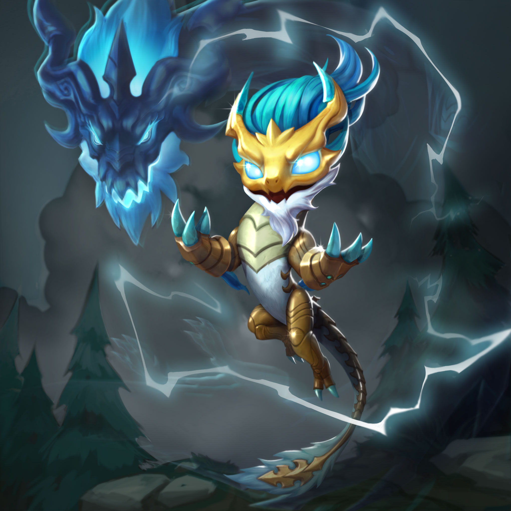
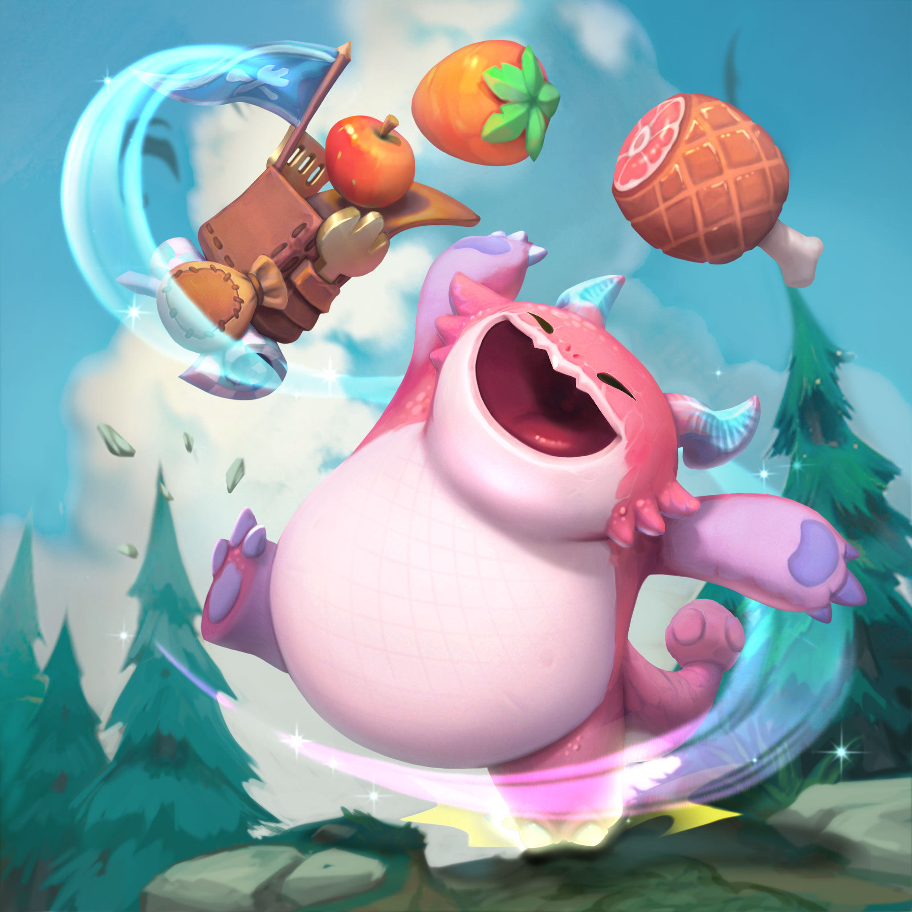
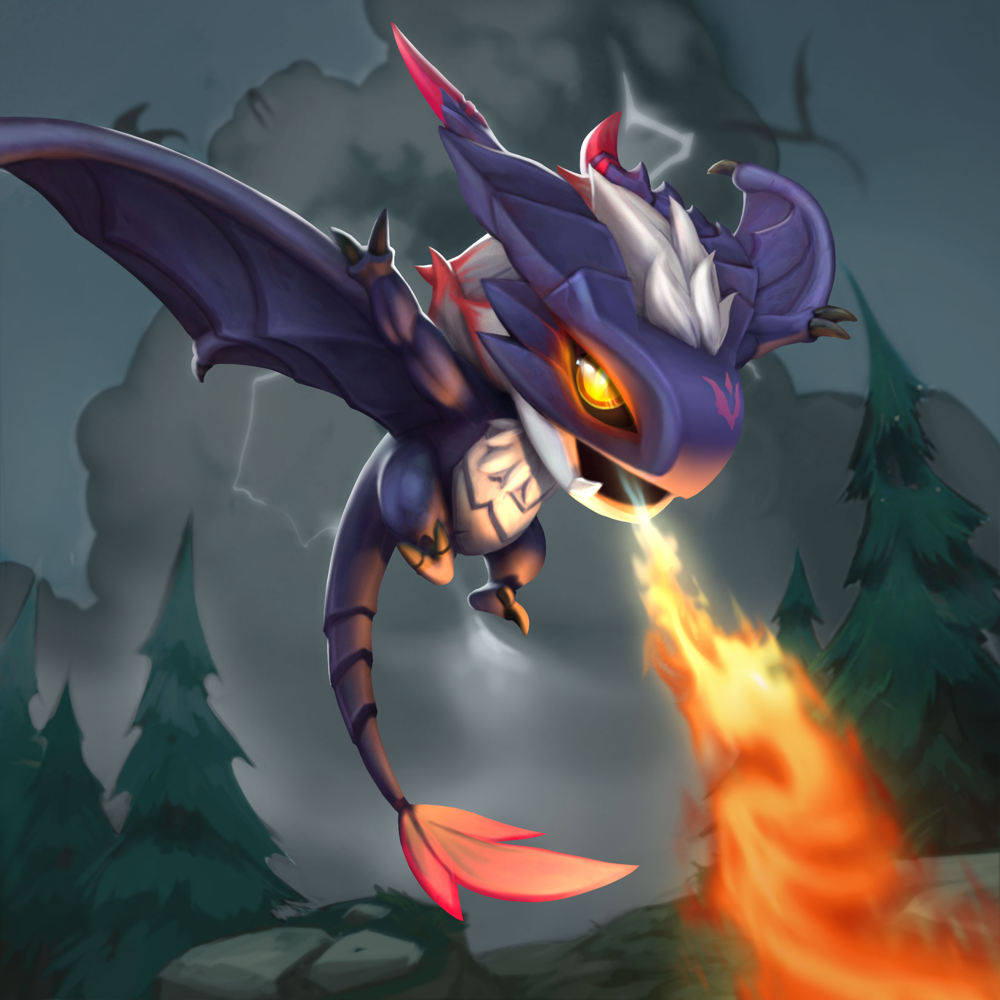

EL PASE DE TFT: DESTINOS Y MÁS
Todo lo que necesitáis saber sobre el pase de Destinos, las mini leyendas y las arenas de TFT: Destinos.
Teamfight Tactics: Destinos llegará pronto y, por supuesto, traerá consigo un montón de formas nuevas de
presumir. Preparaos para una nueva serie de minileyendas inspiradas en dragones, arenas ubicadas en Jonia
que reaccionan de acuerdo con el estado del tablero y escandalosas nuevas chispas. Por último, vamos a
presentaros el sistema de fragmentos de estrella, una forma alternativa de subir a vuestras minileyendas de
nivel. ¡Vamos al lío!
Fragmentos de estrella
A partir de Destinos, podréis subir el nivel de vuestras minileyendas comprando fragmentos de estrella. Si
queréis conseguir la versión de 3 estrellas de vuestra minileyenda favorita, esta será la forma de lograrlo.
En cambio, si lo que queréis es seguir aumentando vuestra colección, los huevos seguirán siendo la mejor
opción para vosotros.
Aquí os explicamos cómo funcionan:
Conseguir fragmentos de estrella
Los fragmentos de estrella estarán disponibles en la tienda y mediante el pase+ de Destinos. Conseguiréis un
total de 300 fragmentos de estrella con el pase. Los fragmentos de estrella estarán disponibles en paquetes
a partir de 625 RP. Dicho paquete básico contará con suficientes estrellas como para aumentar el nivel de la
mayoría de minileyendas una vez. También dispondréis de paquetes más grandes, que contienen fragmentos de
estrella adicionales por si os habéis comprometido con aumentar vuestra colección. Seguimos investigando
otras formas de comprar o adquirir fragmentos de estrella, pero llegarán en futuras actualizaciones.
Utilizar fragmentos de estrella
Después de adquirir unos cuantos fragmentos de estrella, dirigíos a las selecciones, donde escogéis
normalmente a vuestra minileyenda. Si seleccionáis una minileyenda que se pueda mejorar, haced clic sobre
ella y los poros que hacen funcionar la tienda se encargarán del resto. Tened en cuenta que dichas
mejoras no son reembolsables, así que ¡aseguraos de utilizarlas sabiamente!
Harán falta 100 fragmentos de estrellapara mejorar minileyendas raras (como Pingu caballero) y minileyendas
del pase+ (como Topo excavador
astronauta y Alargéntea guardián de las estrellas) y pasarlas de 2 a 3 estrellas; 125 fragmentos de estrella
para mejorar minileyendas épicas (como Caballero extrapicante); y 150 fragmentos de estrella para mejorar
minileyendas legendarias (como Señor de los cuervos).
Minileyendas
Destinos llega con tres nuevas minileyendas inspiradas en dragones. Ao Shin, Umbra, Choncc y todas sus
variantes no legendarias podrán comprarse directamente desde la tienda. Las raras costarán 750 RP y las
épicas 925 RP. También estarán disponibles en huevos si no estáis buscando a un dragón en concreto, pero
queréis completar vuestra colección, o si queréis conseguir una variante legendaria.
Ao Shin

Un descendiente del linaje de dragones de la tormenta. Ao Shin es un guardián de la tormenta, y esgrime
dos poderosas armas: la suavidad de la lluvia y la ferocidad de los rayos y truenos.
Roles

Al ser un cachorro, Pachonc siempre tiene hambre y sueño. Aunque lo caracteriza una naturaleza apacible,
Pachonc puede adquirir un poder feroz si lo provocan... o si lo tientan con los bocadillos adecuados.
Umbra

Umbra, un dragón sombrío, parece cauto y reservado al principio. Sin embargo, si un mortal se gana su
confianza, se muestra cariñoso y con una dedicación absoluta que lo lleva a conjurar a las sombras y a las
llamas para defender a sus aliados.